Simulador de Custos
Com o simulador de custos é possível identificar a simulação do custo total de um item, usando como base um roteiro e as listas de preços selecionadas. Este valor simulado também poderá ser salvo em uma lista de preços.
A tela do simulador de custos pode ser localizada em:
Produção -> Custos -> Simulador de Custos
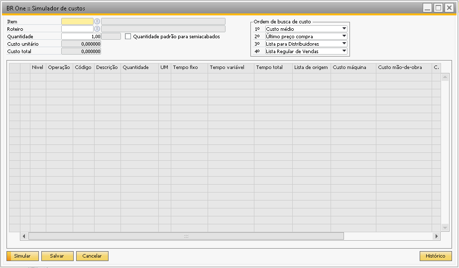{kind=link}
O cabeçalho é utilizado para identificar qual o item será simulado, por padrão ao selecionar o item, o campo ‘Roteiro’ será preenchido automaticamente com o roteiro padrão do item, mas é possível alterá-lo manualmente para a utilização de outro roteiro.
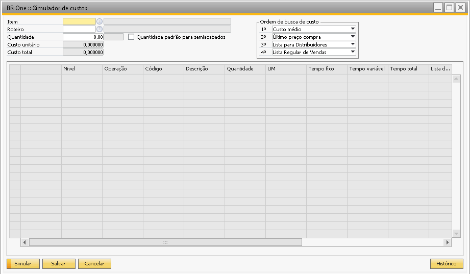{kind=link}
Na parte direita do cabeçalho é o local para definir a prioridade no qual o sistema buscará o custo para os componentes na simulação, isso é, caso o componente não tenha custo na primeira lista de preços passará a olhar a segunda lista definida e assim até olhar as 4 listas de preços definidas (ou menos pois o preenchimento das 4 não é obrigatório para a simulação), e caso ainda assim não identifique nenhum custo, será levado custo 0 para o componente.
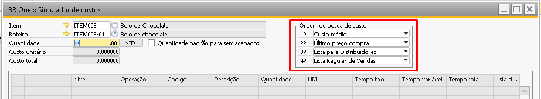{kind=link}
A quantidade por padrão sempre virá preenchida com 1, mas esta quantidade pode ser alterada no momento da simulação ou até mesmo definir outra quantidade padrão no campo ‘Quantidade padrão’ da aba Dados de planejamento do cadastro do item.
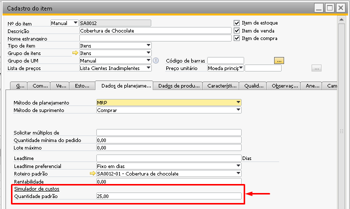{kind=link}
O parâmetro ‘Quantidade padrão para semiacabados’ permite ao sistema calcular os custos dos roteiros para os itens semi-acabados utilizando a quantidade padrão do cadastro do item na aba ‘Dados de planejamento’.
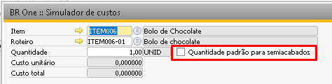 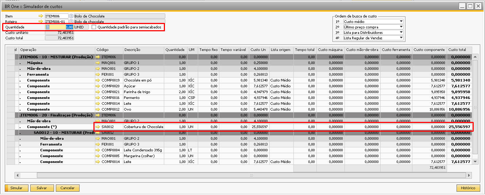 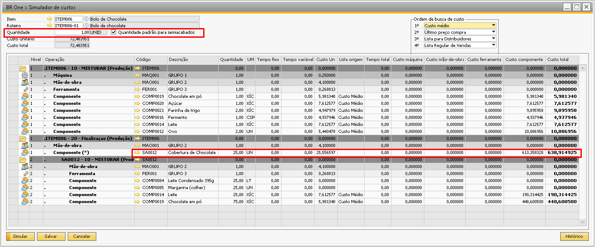{kind=link}
{kind=link}
{kind=link}
Com esse parâmetro selecionado no simulador de custo, o sistema irá executar o cálculo para cada semi-acabado do roteiro selecionado com base na quantidade padrão. Com isso, o custo das quantidades fixas e tempos fixos serão rateados para a quantidade total produzida, reduzindo o custo unitário de cada item.
Exemplo:
Para produzir um bolo é necessário produzir a cobertura, para produzir a cobertura inicialmente é necessário limpar o equipamento, para essa limpeza é utilizado um produto de limpeza e mais a mão de obra que executa esta limpeza. Independente de ser produzido uma cobertura ou mil coberturas a quantidade de custo desses itens é a mesma. Ao fabricar uma calda esse custo será totalmente absorvido para apenas uma calda, o que irá elevar o custo unitário.
Se ao executar o simulador de custos o usuário selecionar o parâmetro ‘Quantidade padrão para semiacabados’, caso a quantidade padrão seja por exemplo 1.000 coberturas, o custo fixo será rateado individualmente para cada peça, reduzindo assim o custo unitário.
Caso o semi-acabado não possua roteiro padrão, a estrutura deste semi-acabado não será carregada no simulador e os custos não serão somados ao item pai, levando o valor zerado conforme mostrado abaixo:
Sem roteiro padrão para o SA0012
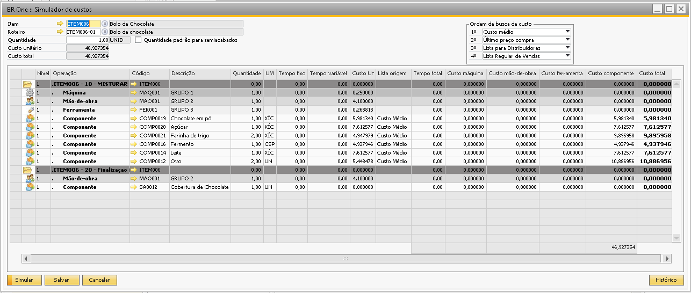{kind=link}
Com roteiro padrão para o SA0012
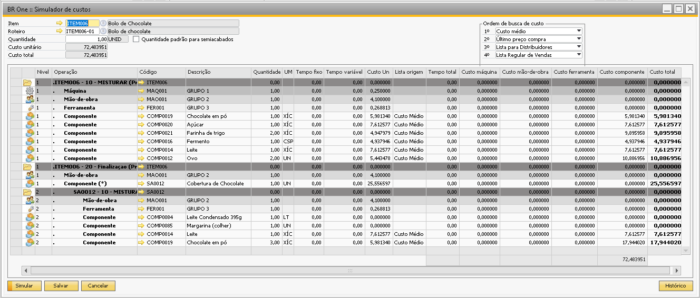{kind=link}
Ao clicar em ‘Simular’ todos os custos serão simulados com base nas listas encontradas e apresentados em tela. É possível na coluna ‘Lista de Origem’ identificar em qual lista de preços o sistema identificou o custo do item:
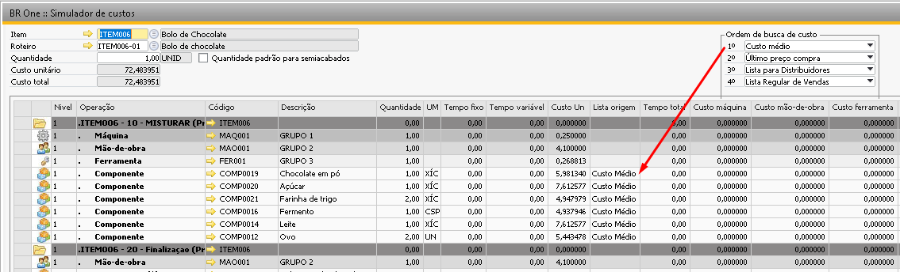{kind=link}
Caso o sistema repasse cada uma das listas de preços selecionadas e ainda assim não identifique nenhum preço definido para o item, levará o mesmo sem valor.
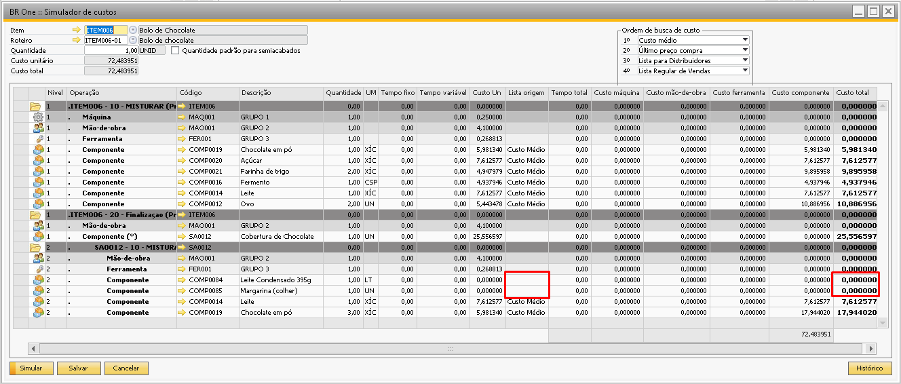{kind=link}
As colunas de ‘Custo máquina’, ‘Custo mão-de-obra’ e ‘Custo ferramentas’ usará para o cálculo o campo ‘Custo hora’ definido na tela ‘Grupo de recursos’:
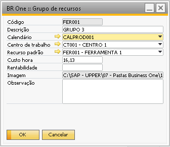 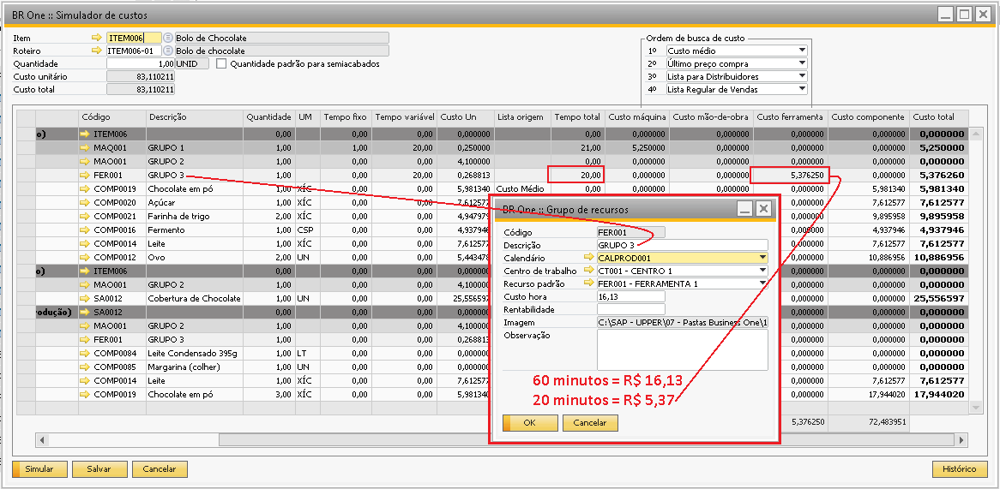{kind=link}
{kind=link}
Caso o sistema não identifique ‘Custo hora’ no grupo de recursos buscará o custo hora no ‘Centro de trabalho’ vinculado ao grupo de recursos.
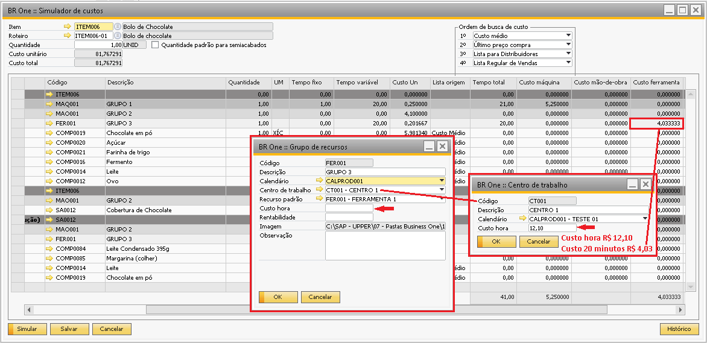{kind=link}
As colunas mostrarão um somatório total identificados no rodapé da tela e na lateral direita o custo total identificado para aquela linha.
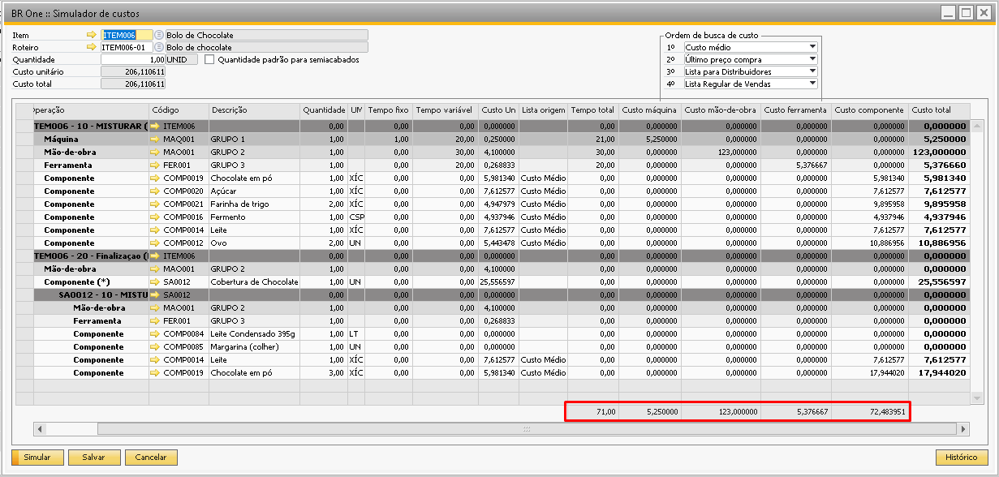{kind=link}
Após a simulação os campos ‘Custo unitário’ e ‘Custo total’ localizados no cabeçalho da tela serão preenchidos com os valores encontrados:
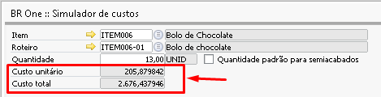{kind=link}
Esses valores podem ser apenas visualizados ou caso necessite salvá-los em uma lista de preços também é possível, para isso é necessário clicar no botão ‘Salvar’ do rodapé da página.
A configuração que irá definir se os valores simulados serão atualizados apenas para o item pai na lista de preços ou se todos os níveis terão seus custos atualizados na lista de preços, é a configuração ‘Atualizar preços’ localizado nas Configurações de produção -> Aba simulador de custos.
Atualizar preços
O campo ‘Todos níveis’ faz com que seja alterado o preço de todos os componentes utilizados no roteiro do item(s) selecionado(s) nas telas de simulador de custo individual ou global.
O Campo ‘Item pai’ faz com seja alterado apenas o preço do(s) item(s) selecionado(s) no simulador de custo individual ou global.
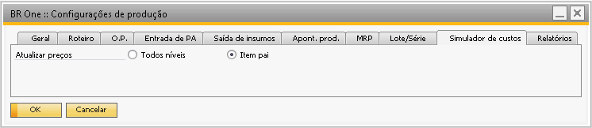{kind=link}
Ao clicar em salvar caso a opção seja ‘Item pai’ aparecerá a mensagem abaixo:
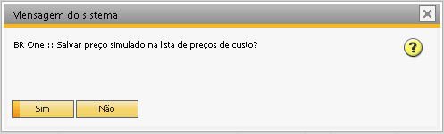{kind=link}
Clicando em ‘Sim’ teremos as mensagens informando que o histórico está sendo salvo e depois do processo gravado com sucesso.
{kind=link}
BR One :: Salvando histórico…
{kind=link}
BR One :: Preço atualizado com sucesso.
Caso a opção esteja ‘Todos os níveis’ ao clicar em ‘Salvar’ a mensagem abaixo vai aparecer:

Br One :: salvar preço simulado de todos os componentes na lista de preços de custo?
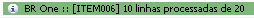{kind=link}
BR One :: [ItemXX] X linhas processadas de X
BR One :: Salvando histórico…
BR One :: Preço atualizado com sucesso.
O custo unitário do item será salvo para o item simulado na lista definida no campo ‘Lista de preços de custo’ localizado no caminho:
Administração -> Inicialização do sistema -> Configurações gerais -> Aba Estoque.
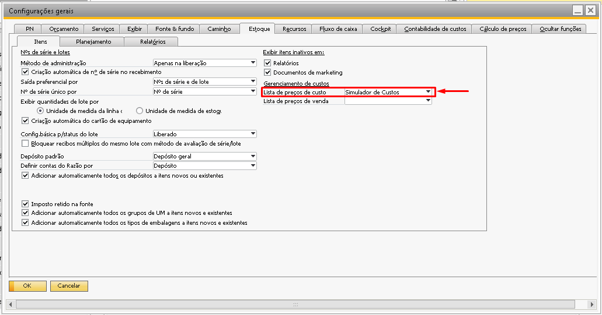{kind=link}
Após salvar o resultado da simulação, ao acessar a lista de preços e localizar o item é possível visualizar o preço identificado no simulador.
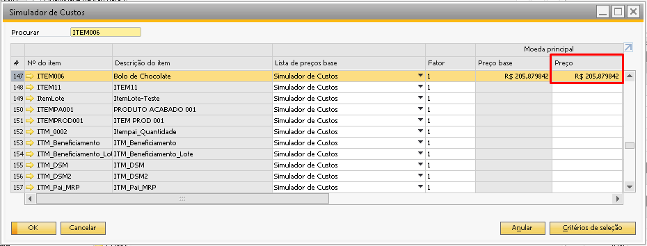{kind=link}
Caso esteja selecionado ‘Todos os níveis’ o campo ‘Preço’ na lista de preços do simulador será atualizado tanto para o item simulado quanto para os componentes.
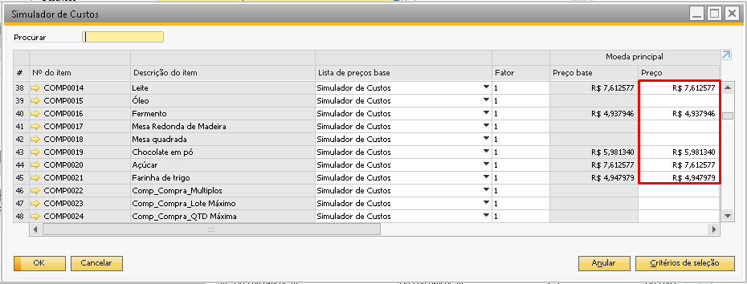{kind=link}
Caso não tenha sido definida uma lista de preços de custo, ao clicar no botão ‘Salvar’, a seguinte mensagem será exibida:
{kind=link}
BR One :: Não foi definida uma lista de preços de custo. Defina uma lista de preço nas Configurações gerais, aba Estoque, sub aba Itens.
Após Salvar o resultado da simulação o sistema adicionará uma linha na tela de histórico das simulações. A tela de histórico das simulações anteriores pode ser acessada tanto na tela do simulador quanto dentro do item indo na opção ‘Histórico simulador de custo’.
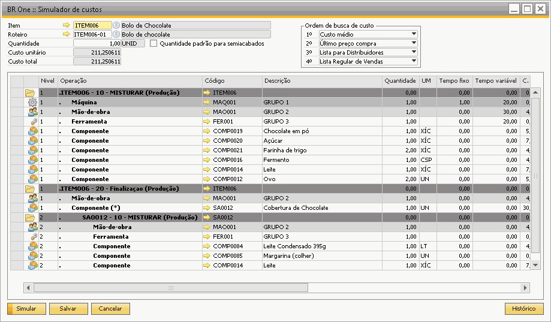 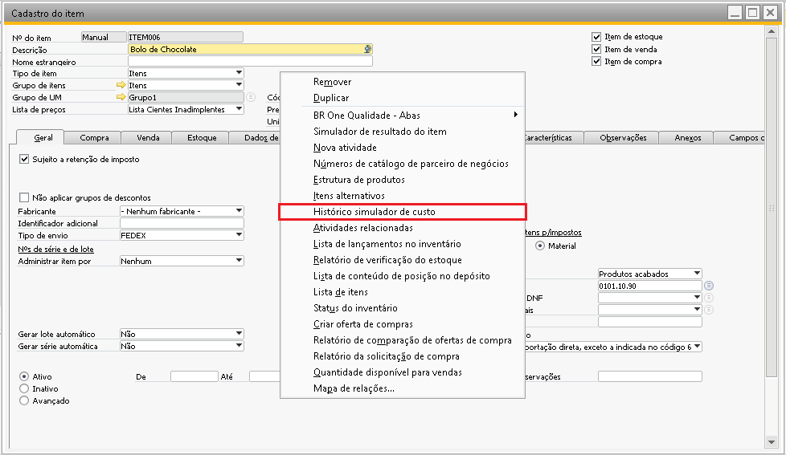 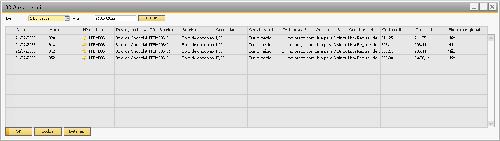{kind=link}
{kind=link}
{kind=link}
Caso queira ‘Excluir’ alguma linha também é possível indo no botão ‘Excluir’, porém, o sistema sempre mantém uma linha no histórico.
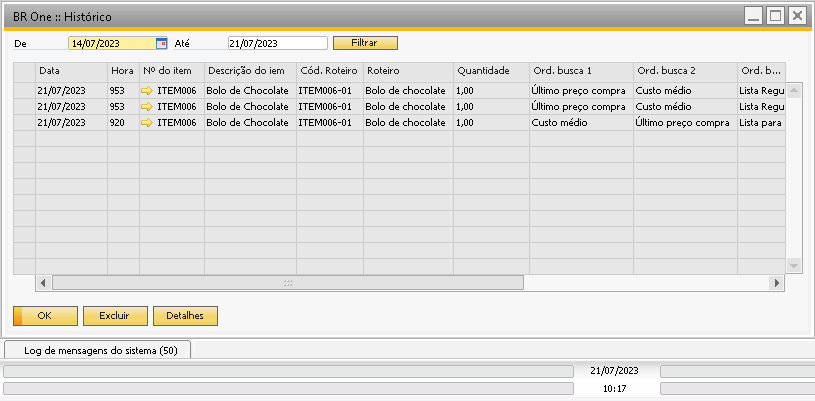{kind=link}
Também é possível acessar os detalhes de cada linha de histórico.
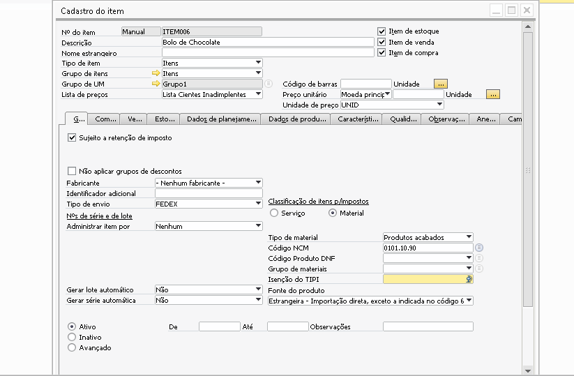{kind=link}